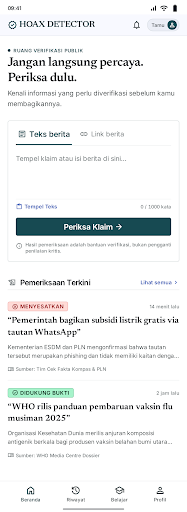
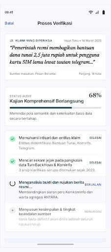
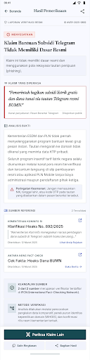
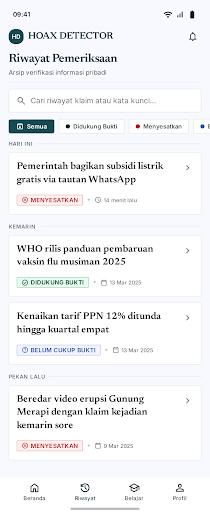
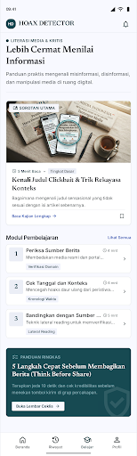
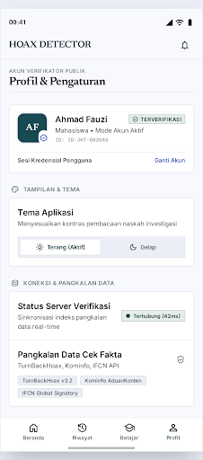

Koleksi kode HTML prototype interaktif dan screenshot desain dari Stitch untuk antarmuka Hoax Detector.

Tampilan dashboard utama dengan ringkasan statistik, form cek cepat, dan panduan.

Halaman input klaim berita melalui teks bebas atau URL dengan filter mode.

Halaman detail verifikasi NLI dengan skor kepercayaan, bukti, dan sumber referensi.

Daftar arsip riwayat verifikasi sebelumnya dengan filter kategori dan pencarian.

Pusat modul edukasi interaktif untuk mengenali hoaks, clickbait, dan manipulasi media.

Pengaturan akun, preferensi tema, status koneksi backend server, dan informasi sistem.